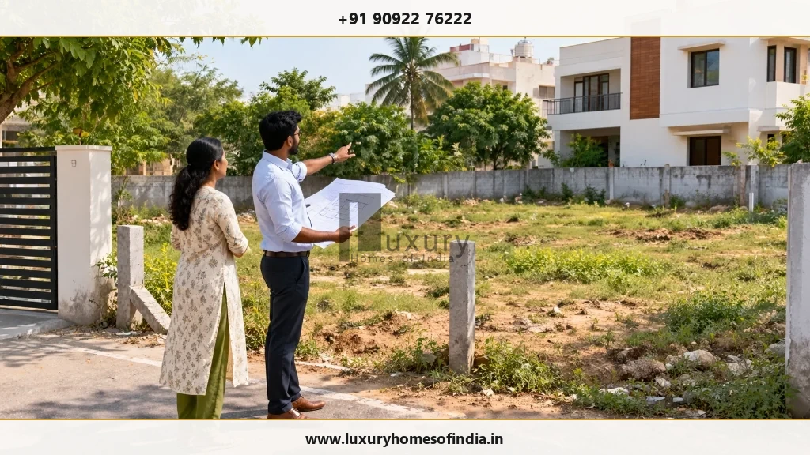
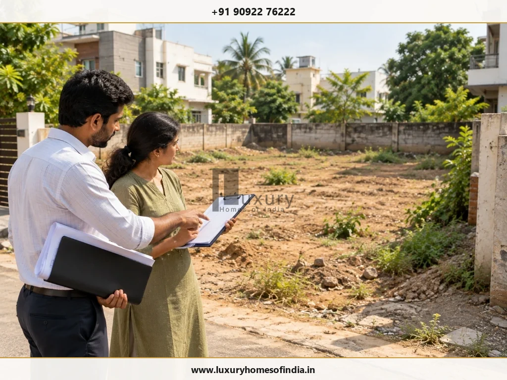
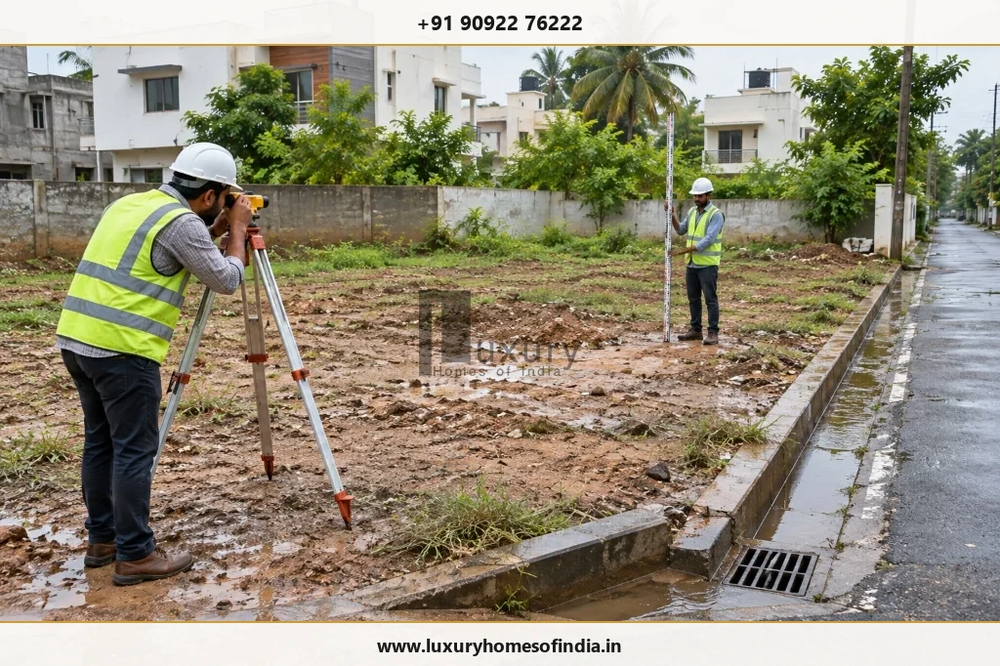

Before starting house construction, verify your property documents, confirm plot dimensions, understand the applicable building approvals, assess site and soil conditions, establish a realistic budget, finalise coordinated architectural and engineering drawings, and document the builder's responsibilities in a written contract. You should also plan electrical and plumbing requirements, procurement, drainage, site safety and quality inspections before the relevant work begins.
For homeowners building an independent house or luxury villa in Chennai, these preparations help identify potential problems before they become expensive changes. This guide explains 18 practical steps, provides a pre-construction readiness checklist and highlights the decisions to resolve before excavation or foundation work starts.
The objective is not simply to begin construction quickly, but to begin with the necessary permissions, technical information, financial clarity and project responsibilities in place.

Executive Summary: The Pre-Construction Golden Rules
- Sequential Decision Making: Plot information informs the design, design guides structural engineering, engineering dictates BOQ, and the contract fixes commercial liabilities.
- Legal & Boundary Precision: Encumbrance certificates and parent deeds must be supplemented with on-ground total station survey pegging before foundation drawings are finalized.
- Statutory Readiness Gate: Never break ground without verified approvals from the Greater Chennai Corporation (GCC) or CMDA under Tamil Nadu's Single Window Portal.
- Geotechnical Testing: Commission SPT borehole soil testing before fixing foundation depths to prevent uneven settlement or costly over-engineering.
- Comprehensive Budgeting: The civil construction rate per square foot represents only 60–70% of the total expense. Always budget for utilities, interior fit-outs, compound walls, and contingency reserves.
Why pre-construction planning matters
House construction involves a sequence of interdependent decisions. The plot influences the design, the design informs the engineering, the engineering determines important construction details, and the agreed scope affects both cost and schedule.
When these decisions are made in the wrong order, homeowners may face redesigns, procurement delays, service conflicts or changes to the construction budget.
A structured preparation process helps you identify what is ready, what still needs professional input and what must be resolved before work proceeds.
1. Verify your plot and property documents
Before committing to a construction contract, have the ownership records and property details reviewed by the appropriate legal and technical professionals.
Depending on the property's history and circumstances, relevant documents may include:
- Sale deed or other applicable ownership document.
- Parent documents, tracing uninterrupted title ownership for at least 30 years where relevant.
- Encumbrance Certificate (EC) reflecting nil encumbrances across the full chain of title.
- Patta and other applicable revenue land records (Town Survey Land Register / TSLR extract in Chennai city).
- Survey records, Field Measurement Book (FMB) sketch, and verified plot dimensions.
- Approved layout documentation from CMDA or DTCP, confirming regularized or approved residential layout status.
- Property tax receipts and water/sewerage demand notices where relevant.
- Access rights and easement documents, verifying unrestricted right-of-way from public thoroughfares.
Important Caution: The required documents depend on the property. An Encumbrance Certificate or an individual land record should not be treated as conclusive proof of every aspect of ownership, boundaries or development eligibility. If ownership, land classification, access or boundary information is inconsistent, resolve the issue with the appropriate professionals before making substantial project commitments.
2. Confirm plot boundaries, dimensions and access
The plot's physical characteristics influence building placement, circulation, parking, foundation planning and construction logistics.
Arrange for appropriate site measurements and boundary verification, especially where existing records, boundary markers or adjoining properties are inconsistent.

Critical site verification parameters include:
- Dimensions & Orientation: Plot length, width, diagonal angles, squareness, and solar orientation.
- Adjoining Structures: Existing boundary walls, neighbour foundations, and trees requiring protection or pruning.
- Road Frontage: Road width in front of the plot (critical for FSI calculations under TNCDBR-2019) and turn-radius for ready-mix concrete (RMC) transit trucks.
- Site Topography & Levels: Natural ground levels relative to the crown of the access road and nearby storm drains.
- Existing Obstructions: Low-hanging overhead EB cables, street light poles, or public utility chambers needing relocation.
- Logistical Zones: Space for unloading structural steel, stacking cement bags in a weatherproof shed, and worker welfare.
Use reliable site information rather than an old sketch or verbal description. The information used for design should be consistent with the relevant property records and required surveys.
3. Confirm the applicable building rules and approvals
Before finalising the building design, establish which planning and building requirements apply to the property.
The competent authority and approval procedure depend on the exact location, proposed building and applicable regulations. A property within Greater Chennai Corporation limits may follow a different route from one in another local body or planning jurisdiction.
Check the applicable requirements for:
- Land Use & Zoning: Primary residential, mixed residential, or institutional zoning.
- Building Setbacks & Height: Front, rear, and side setbacks determined by road width and building height.
- Floor Space Index (FSI): Permissible non-high-rise FSI (up to 2.0 under TNCDBR-2019) and plot coverage limits.
- Building Coverage & Parking: Mandatory car parking bays and two-wheeler provisions based on dwelling area.
- Architectural & Structural Documentation: Preparation of drawings by licensed surveyors, registered architects, and structural engineers.
- Site-Specific Permissions: Coastal Regulation Zone (CRZ) clearances along ECR, IAF height NOCs near Tambaram, or CMDA planning permission.
- Statutory Conditions: Clear conditions precedent that must be met before on-site work commences.
Start with the Greater Chennai Corporation town-planning resources where applicable, and confirm the correct authority for the property. The official portal includes building-plan information and references to relevant rules: Official GCC town-planning information.
Do not assume that a general online checklist establishes the current requirements for every plot. Ask the responsible licensed or registered professional to confirm the applicable process.
Readiness Gate: Statutory Lawfulness
Do not commence work until the permissions and other legal conditions applicable to that work have been satisfied. Commencing civil work without planning permission risks stop-work notices, compounding penalties, or demolition orders from municipal enforcement bodies.
4. Arrange an appropriate soil investigation
Soil investigation helps the structural engineer assess ground conditions and determine a suitable foundation approach.
Depending on the site and proposed structure, the investigation may inform decisions about:
- Soil Strata & Bearing Capacity: Safe Bearing Capacity (SBC) across successive depth layers (typically 1.5m to 6m+).
- Groundwater Conditions: Subsurface water-table depth and seasonal fluctuations affecting excavation and dewatering.
- Potential Settlement: Soil consolidation characteristics, especially in black cotton clay pockets or backfilled marshland.
- Foundation Selection & Design: Choosing between isolated pad footings, combined footings, raft slabs, or under-reamed bored piles.
- Geotechnical Testing Scope: Need for chemical analysis of soil water to check for sulphate or chloride corrosion risk to rebar.
The appropriate investigation depends on the property, the proposed building and the available information. It should be determined by qualified professionals rather than by applying the same testing scope to every site.
Homeowner action: Obtain the investigation findings and ensure that the responsible structural engineer considers them before the foundation design and construction scope are finalised.
5. Build a complete project budget
The builder's headline rate per square foot is not the same as the total cost of completing a home.
Prepare a comprehensive project budget that separates the construction contract from other essential expenses and identifies what is included, excluded or still provisional.
| Budget Category | What to Review & Account For | Budget Nature |
|---|---|---|
| Property & documentation | Legal title opinion, boundary survey, Encumbrance Certificate, Patta name transfer, and revenue documentation. | Pre-construction Fixed |
| Design & engineering | Architectural fees, 3D visualisations, structural engineering, MEP design, and soil investigation testing fees. | Pre-construction Fixed |
| Statutory approvals | GCC/CMDA scrutiny fees, development charges, infrastructure amenities charges, and licensed surveyor liaising. | Statutory Fixed |
| Civil construction | Substructure excavation, foundation, RCC frame (columns, beams, slabs), brickwork, plastering, and weatherproofing. | Contract Milestone |
| Building services (MEP) | Concealed plumbing lines, sanitary drainage, electrical conduit, wiring, DB boards, earthing pits, and AC drain routing. | Contract Milestone |
| Architectural finishes | Floor tiles/marble, bathroom wall dado, premium joinery doors, UPVC/aluminium windows, exterior texture paint, and interior emulsion. | Milestone / Allowances |
| Interior fit-outs | Modular kitchen cabinets, quartz counter, bedroom wardrobes, false ceilings, architectural LED lighting, and vanity units. | Provisional / Separate Scope |
| External development | Compound wall, main sliding/swing gate, paver driveway, rainwater harvesting pits, septic tank/UG sump, and basic landscaping. | Contract / Separate Scope |
| Utility connections | Permanent 3-phase TNEB connection, meter deposit, Metro Water & CMWSSB sewerage connection fees. | Statutory / Authority |
| Contingency reserve | A prudent 8% to 15% reserve to absorb unanticipated site conditions, soil depth variations, or client-directed finish upgrades. | Risk Buffer |
The actual categories depend on the project and the contract. Decide on a suitable contingency after reviewing the design's maturity, site conditions, contractual exclusions and financial position.
Key Principle: Establish the expected total project cost before committing to the builder, and record which items are fixed, provisional or excluded.
6. Define your home requirements and lifestyle priorities
A well-planned home begins with a clear brief. List the spaces and features your family needs before the architect finalises the layout:
- Bedrooms & Bathrooms: Number of master suites, children's bedrooms, guest rooms, and dedicated attached toilets.
- Living & Social Areas: Formal drawing room, double-height family lounge, dining room, and pooja alcove.
- Kitchen & Support: Wet kitchen for heavy cooking, dry show kitchen, walk-in pantry, utility area, and washing machine station.
- Work & Study Spaces: Quiet home offices with hardwired network points, study rooms, or reading libraries.
- Accessibility: Ground-floor bedroom for elderly parents, step-free thresholds, wide door passages, and hydraulic home elevator provisions.
- Vehicle Parking: Multi-car covered garage, EV charging point capacity, and two-wheeler parking.
- Lifestyle Upgrades: Private home cinema room, fitness gym, open terrace lounge, plunge pool, or staff accommodation.
Separate essential requirements from optional upgrades. This helps the design team allocate space and budget without compromising everyday usability.
7. Finalise the architectural design
Work with the responsible architect or design professional to develop a coordinated design using the verified site information and agreed home brief.
The comprehensive design package should include:
- Space-Planning Layouts: Clear furniture circulation, door swings, and functional clearances.
- Dimensioned Floor Plans: Exact room lengths, wall thicknesses (200mm vs 100mm partitions), and window sill/lintel heights.
- Façade Elevations & Sections: Floor-to-floor heights, staircase headrooms, cantilever depths, and exterior finish textures.
- Daylight & Passive Cooling: Maximising south-west breeze capture while shading harsh western sun with louvres or overhangs.
- Preliminary Interior Coordination: False ceiling drops, curtain pelmets, and AC indoor unit placements.
Review the plan for functionality, privacy, storage and maintenance as well as appearance. A visually impressive elevation cannot compensate for poor circulation, inconvenient bathrooms or inadequate natural light.
Homeowner action: Resolve major layout decisions before construction. Moving a staircase, altering a structural opening or relocating a bathroom after work begins can affect engineering, services, costs and schedule.
8. Coordinate structural and building-services drawings
Architectural drawings describe the intended design, but the relevant construction work also requires coordinated technical information.
A construction-ready engineering package includes:
- Structural Package: Foundation setting-out, column schedules, beam reinforcement schedules, slab rebar details, and cantilever staircase engineering.
- Plumbing & Drainage Layouts: Water supply piping runs, soil and waste pipe stacks, inspection chamber locations, rainwater downpipes, and overhead tank plumbing.
- Electrical & Low-Voltage Layouts: Conduit chasing plans, switchboard point heights, DB load distribution, UPS inverter circuits, EV charger lines, and earthing pit details.
- Waterproofing Details: Terrace slab sunken slab details, coving profiles, and pipe-penetration collar waterproofing.
Confirm that the relevant drawings have been coordinated and that important conflicts are resolved before the corresponding work starts. Structural changes must be reviewed by the responsible structural engineer. Do not alter reinforcement, openings or structural members on the basis of an informal site instruction.
9. Choose the appropriate construction contract model
The right contract depends on your budget, available time, desired involvement and the complexity of the project.
| Contract Model | Scope Allocation | Main Consideration for Homeowners |
|---|---|---|
| Labour-only contract | Contractor supplies skilled & unskilled labour; homeowner purchases all materials. | Maximum purchasing control, but requires intense daily supervision, procurement coordination, and exposure to material wastage. |
| Material-and-labour contract | Contractor supplies agreed materials and executes civil & finishing works. | Simplifies logistics, but requires rigorous, brand-specific material schedules and inspection hold-points to prevent grade dilution. |
| BOQ or item-rate contract | Work paid based on measured physical quantities against agreed unit rates. | Highly transparent and equitable; requires clear measurement standards (IS 1200) and joint measurement verification. |
| Turnkey contract | Single entity manages civil, architectural finishes, MEP, and basic interiors to handover. | Single-point accountability and predictable delivery; depends heavily on thorough contract documentation and specification schedules. |
| Design-and-build | Integrated team coordinates architecture, engineering, and construction under one roof. | Eliminates designer-builder conflicts and accelerates timelines; requires clear deliverables and fee clarity at the outset. |
No single model is best for every homeowner. A turnkey arrangement may simplify coordination, while labour-only construction can require more direct involvement in procurement and site management. Choose a model that matches your ability to manage decisions and verify that the contract clearly allocates responsibilities.
10. Evaluate prospective home builders
Do not select a builder based only on advertisements, photographs or the lowest price. Assess shortlisted companies against consistent criteria:
- Relevant Portfolio: Verify delivered independent residences and luxury villas comparable in scale and structural intricacy.
- In-House Engineering: Dedicated civil engineers on site daily rather than relying exclusively on subcontracted labor gangs.
- Quotation Transparency: Itemised BOQ proposals versus vague lump-sum quotes that hide future exclusions.
- Quality Assurance Systems: Documented testing protocols for cube tests, steel verification, and waterproofing ponding.
- Client References: Speak directly with past clients about adherence to timelines, variation billing, and post-handover responsiveness.
Where possible, visit completed projects and ask who will supervise your home after the agreement is signed. For luxury villas, examine the builder's experience with premium finishes, façade detailing, custom joinery and coordination between civil work and interior installations.
11. Obtain a detailed construction quotation
Request a written quotation based on a clearly defined scope and sufficiently developed design.
Review whether the quotation explicitly identifies:
- Pricing Basis & Built-Up Area: How built-up area (BUA) is measured (e.g., plinth area vs slab projection area) and whether balconies and carports carry fractional rates.
- Structural Materials: Specific cement brands (OPC 53 for structural pours, PPC for masonry/plastering) and TMT steel grades (Fe 550D primary mills like Tata Tiscon, JSW, or Sail).
- Sanitaryware & CP Allowances: Fixed rupee allowances per bathroom (e.g., ₹60,000 per toilet) rather than vague promises of "luxury fittings".
- Joinery Specifications: Teak wood frame dimensions (e.g., 5" x 3" first-quality Burma or African teak) and shutter specifications.
- Clear Exclusions: Whether temporary EB electricity deposits, Metro Water road-cutting charges, compound walls, or architectural fees are excluded.
Compare quotations using the same scope, specifications and measurement basis. A lower price may reflect omitted work, different materials or a narrower scope.
12. Sign a comprehensive construction agreement
Before work begins, document the arrangement with the selected builder in a legally enforceable contract. The agreement should address:
- Parties & Property: Clear identification of owner, builder, and exact surveyed property coordinates.
- Contract Documents: Incorporation of approved GFC drawings, itemised BOQ, and material schedule as binding annexures.
- Milestone Payment Schedule: Staged disbursements strictly linked to certified physical completion milestones.
- Timeline & Liquidated Damages: Definite start and handover dates, with clear penalties for unexcused builder delays.
- Variation Protocols: Mandatory written change orders with pre-agreed rates before deviations are executed on site.
- Defect Liability Period: A minimum 12-month defect liability warranty backed by a 5% retention hold from the final bill.
Resolve inconsistencies between the quotation, drawings and agreement before signing. For a high-value project, independent legal review can help identify ambiguous responsibilities or unbalanced clauses.
13. Plan the construction schedule and procurement
Ask the builder to prepare a programme that reflects the actual project scope, dependencies, required inspections and procurement lead times.
Typical stages include site preparation, excavation, foundation, plinth, structural frame, masonry, concealed MEP, plastering, waterproofing, flooring, painting, and interior fit-out.
Identify products that require early selection or ordering, such as custom thermal-break windows, imported Italian marble, special sanitaryware and bespoke joinery. Include appropriate time for inspections, curing, drying, testing and other dependencies. Do not remove necessary technical activities simply to meet an aggressive completion date.
14. Plan electrical, plumbing and interior requirements early
Late decisions can lead to avoidable changes, particularly after services have been concealed. Before the relevant installations begin, coordinate:
- Electrical Points & High Loads: Heavy power points for 2-ton inverter ACs, instant geysers, induction hobs, and EV chargers.
- Plumbing Rough-Ins: Wall-hung toilet concealed cistern frames, diverter depths, and shower partition drains.
- Ceilings & Lighting: False ceiling drop levels to accommodate concealed AC ducting and recessed magnetic track lights.
- Solar & Automation: Conduit routing from terrace solar panels down to the main electrical panel and network rack.
You do not need to purchase every fixture at the start. However, important dimensions, connections and service requirements should be coordinated before the affected work is completed.
15. Assess Chennai-specific drainage and climate conditions
Site-specific weather, drainage and ground-level conditions should inform the design and construction plan.

Key Chennai climatic considerations include:
- Finished Floor Level (FFL): Elevating ground-floor FFL at least 2.5 to 3.5 feet above the road crown to safeguard against seasonal road height re-tarring and monsoon runoff.
- Roof & Terrace Drainage: Providing a minimum 1:100 slope on terrace slabs leading to adequate 100mm PVC rainwater downpipes.
- Rainwater Harvesting (RWH): Compliance with Tamil Nadu statutory RWH rules, including silt-settling chambers and recharge boreholes.
- Coastal Salt Air Protection: For properties along ECR/OMR, specifying anti-corrosive concrete cover blocks and marine-grade exterior paints.
If the property is low-lying, has a history of waterlogging or has drainage constraints, obtain appropriate site-specific advice before finalising the design. Do not assume a standard drainage or waterproofing detail will suit every plot.
16. Organise site logistics, safety and material storage
Before excavation and material deliveries begin, agree on how the site will operate:
- Temporary Utilities: Securing a temporary commercial EB power connection (Tariff VI/V) and a functional on-site borewell for construction water.
- Weatherproof Cement Storage: Erecting an elevated, waterproof shed to store cement bags clear of ground dampness.
- Steel Storage: Stacking TMT steel bars on wooden battens off the soil to prevent mud contamination and premature rusting.
- Worker Safety & Barricades: Perimeter safety tin barricading, worker helmets, safety boots, and sanitary facilities.
- Debris & Neighbor Relations: Establishing scheduled debris removal and informing immediate neighbours to maintain cordial relations.
17. Establish progress reporting and quality checks
A project benefits from a clear system for communicating progress and checking work before it is concealed or covered by the next stage.
Agree on how the construction team will report:
- Completed work against planned milestones.
- Site photographs, weekly video walk-throughs, and drone overviews.
- Material procurement status and mill test certificates for steel and cement.
- Mandatory inspections required before concrete placement or pipe concealment.
- Quality concerns, cube testing laboratory reports, and corrective actions taken.
- Decisions pending from the homeowner to prevent schedule bottlenecks.
LHI's published civil engineering and construction service information describes phased execution, site quality checks and weekly progress reports. Homeowners can use these as discussion points when evaluating project-management arrangements. Confirm the specific reporting and inspection commitments in any proposed construction agreement.
18. Complete the pre-construction readiness checklist
Use this comprehensive readiness checklist before authorising the first major construction activity on your plot.
A. Property and Technical Readiness
- Property documents and boundaries have been legally reviewed.
- Plot dimensions, corner stones, and construction access are physically verified.
- Appropriate soil investigation has been completed where required.
- Foundation requirements have been engineered to site-specific soil data.
- Architectural design is sufficiently finalised and signed off.
- Required structural and building service (MEP) drawings are available.
- Major design-coordination issues and service clashes have been resolved.
B. Legal and Financial Readiness
- Applicable GCC/CMDA permissions and commencement conditions are satisfied.
- The total project budget and contingency reserve are formally planned.
- Construction scope, brand schedules, and exclusions are documented.
- Material specifications and rupee allowances are recorded.
- The itemised quotation has been thoroughly vetted.
- The formal construction agreement is signed with milestone schedules.
- Payment milestones and verification procedures are mutually agreed.
C. Execution and Logistical Readiness
- The baseline Gantt construction schedule is finalised.
- Procurement responsibilities and long-lead items are identified.
- Site access, construction water, temporary EB power, and storage are ready.
- Qualified site engineering supervision is assigned.
- Progress reporting and hold-point inspection procedures are agreed.
- The written change-order procedure is documented.
- Early homeowner material decisions have been prioritized.
Readiness Decision Rule
If a required approval, essential technical detail or contractual responsibility remains unresolved, pause the affected work until the issue is clarified. Never rush into excavation hoping that pending details will resolve themselves on site.
Common mistakes to avoid before construction
Avoiding these frequent missteps protects your investment and ensures a smooth construction experience:
1. Starting with incomplete drawings
Incomplete information forces ad-hoc decisions on site and creates severe inconsistencies between civil contractors, plumbers, and electricians.
Better approach: Coordinate the architectural, structural and relevant service information before the corresponding work begins.
2. Underestimating the total budget
A civil construction quotation covers only the bare shell and core, omitting expensive interior woodwork, air conditioning, utility deposits, and landscaping.
Better approach: Prepare a consolidated cost plan that accounts for all 10 budget categories and maintains an 8–15% contingency reserve.
3. Choosing a builder based only on price
An artificially low square-foot rate almost always conceals omitted works, cheaper secondary steel, or vague allowances that escalate later.
Better approach: Compare like-for-like scope, material standards, payment terms and quality-control procedures.
4. Relying on verbal agreements
Informal promises made during friendly sales discussions become unenforceable when cost or responsibility disputes arise during construction.
Better approach: Document every significant commitment in the contract and approve all variations strictly in writing.
5. Delaying material selections
Late selection of plumbing fixtures, large-format tiles, or window systems disrupts site progress and causes expensive rework after masonry is finished.
Better approach: Identify long-lead products and coordinate essential specifications at least 4 to 8 weeks before installation.
6. Ignoring site drainage
Setting finished floor levels too low without studying road elevation or local drainage leads to perennial flooding during Chennai's monsoon.
Better approach: Obtain a site-specific survey and establish finished floor levels comfortably above road levels with proper rainwater gradients.
Frequently asked questions
Begin by reviewing property documents, confirming plot dimensions and establishing the applicable development requirements. Then assess the site, define your home brief and engage the appropriate design professionals.
The appropriate investigation depends on the site, proposed structure and engineering requirements. Ask the responsible structural engineer what investigation is necessary for the property.
The applicable requirements depend on the property's location, proposed building and current rules. Confirm the competent authority, required permissions and supporting documents with the responsible professional and authority.
Account for the construction contract, design and engineering, applicable approvals, utilities, interiors, external development and an appropriate contingency. Prepare a project-specific estimate rather than relying on a generic per-square-foot figure alone.
A sufficiently developed design and clear scope make detailed quotations easier to compare. A design-and-build arrangement can begin earlier, provided that design fees, deliverables and responsibilities are clearly documented.
Do not commence work that depends on unresolved engineering information or required permissions. Excavation and foundation work should follow the relevant design and applicable legal conditions for commencement.
Depending on the project, collect the signed agreement, quotation, scope of work, drawings, material specifications, BOQ where applicable, construction schedule and payment milestones. Clarify who is responsible for approvals and project records.
A turnkey arrangement may simplify coordination, but suitability depends on the scope and the homeowner's desired level of involvement. Check deliverables, exclusions, variation procedures, payment conditions and handover obligations.
Define the scope, compare detailed quotations, plan a suitable contingency, record specifications and approve variations in writing. Regular cost and progress reviews help identify issues early.
Coordinate interior requirements during the design stage, particularly where they affect electrical points, plumbing, ceiling levels, lighting, cabinetry or equipment. Final selections can progress in stages, but essential provisions should be resolved before the relevant work is concealed.
Conclusion: Start with a construction-ready plan
Preparing before construction begins helps homeowners make informed decisions about the property, design, budget, technical requirements and builder responsibilities.
For a house or luxury villa in Chennai, pay particular attention to the property's legal and physical conditions, applicable permissions, coordinated drawings, drainage, procurement and quality checks.
Before authorising work, confirm that the necessary approvals are in place, the relevant technical information is ready and the construction agreement clearly defines responsibilities.
If you are considering an independent house or luxury villa, you can explore Luxury Homes of India's civil engineering and construction services and discuss the proposed scope before committing to a project.
Plan carefully. Define the scope. Begin construction with clarity.
Luxury Homes of India (LHI)
Discover comprehensive pre-construction planning, architectural coordination, and transparent turnkey execution for bespoke luxury residences across Chennai.
- Website: https://www.luxuryhomesofindia.in/
- Phone: +91 90922 76222
- Email: info@luxuryhomesofindia.in
- Address: #85, 4th Floor, Lotus Tower, Guindy, Chennai – 600032
Disclaimer: This article provides general information for homeowners and is not a substitute for property-specific legal, architectural, structural or regulatory advice. Document requirements and approval procedures depend on the property, proposed development and applicable rules.